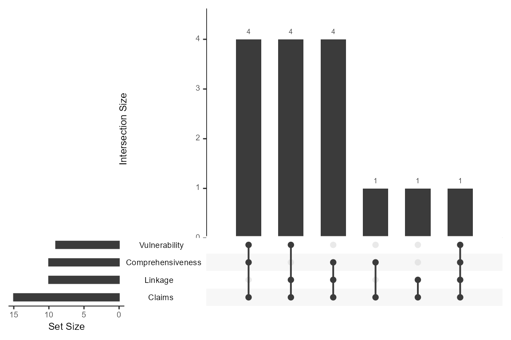
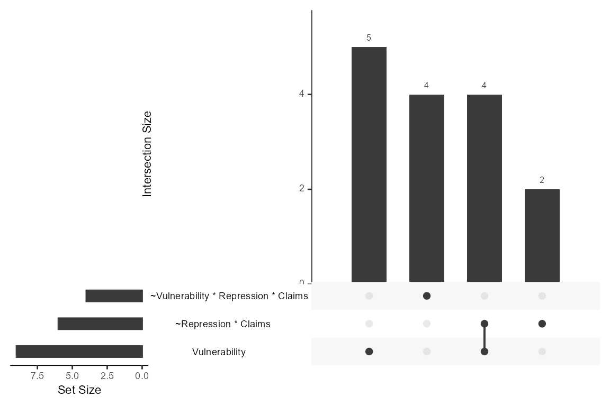

Aggregation over partitions
Ingo Rohlfing
2026-05-24
Source:vignettes/Aggregation-over-partitions.Rmd
Aggregation-over-partitions.RmdThe functions upset_conditions() and
upset_conjunctions() can be used after one has derived
partition-specific models with partition_min() or
partition_min_inter(). The functions take the models from
the solution column of the dataframes produced with
partition_min()/or partition_min_inter() as
input to produce an UpSet plot. upset_conditions() and
upset_configurations() are functions that draw on the
upset() function of the UpSetR package. We
use the dataset by Grauvogel and von Soest
(2014) for illustrating the meaning and interpretation of UpSet
plots.
Aggregation over individual conditions
The following plot aggregates the occurrence and co-occurrence of single conditions over the partition-specific parsimonious solutions.
data("Grauvogel2014")
# parsimonious solution for each type of Sender
GS_pars <- partition_min(
dataset = Grauvogel2014,
units = "Sender",
cond = c("Comprehensiveness", "Linkage", "Vulnerability",
"Repression", "Claims"),
out = "Persistence",
n_cut = 1, incl_cut = 0.75,
solution = "P",
BE_cons = rep(0.75, 3),
BE_ncut = rep(1, 3))
# UpSet plot with three sets
upset_conditions(GS_pars, nsets = 4)
#> Warning: `aes_string()` was deprecated in ggplot2 3.0.0.
#> ℹ Please use tidy evaluation idioms with `aes()`.
#> ℹ See also `vignette("ggplot2-in-packages")` for more information.
#> ℹ The deprecated feature was likely used in the UpSetR package.
#> Please report the issue to the authors.
#> This warning is displayed once per session.
#> Call `lifecycle::last_lifecycle_warnings()` to see where this warning was
#> generated.
#> Warning: Using `size` aesthetic for lines was deprecated in ggplot2 3.4.0.
#> ℹ Please use `linewidth` instead.
#> ℹ The deprecated feature was likely used in the UpSetR package.
#> Please report the issue to the authors.
#> This warning is displayed once per session.
#> Call `lifecycle::last_lifecycle_warnings()` to see where this warning was
#> generated.
#> Warning: The `size` argument of `element_line()` is deprecated as of ggplot2 3.4.0.
#> ℹ Please use the `linewidth` argument instead.
#> ℹ The deprecated feature was likely used in the UpSetR package.
#> Please report the issue to the authors.
#> This warning is displayed once per session.
#> Call `lifecycle::last_lifecycle_warnings()` to see where this warning was
#> generated.
Each line (or horizontal bar) in an UpSet plot displays how often a
single condition occurs over all 16 partition-specific models. The plot
shows that Claims occurs as a single condition in 15 models
out of 16.
Each column or vertical bar in the plot shows how often single conditions occur together in a model. (This means two conditions that co-occur in a model are not necessarily part of the same conjunction.) The plot shows that three different sets of conditions occur together in five models each and that three more combinations of conditions are specific to one model each.
Aggregation over individual sufficient terms
The function upset_configurations() decomposes models
into the constitutive sufficient terms. A ‘term’ can be a configuration
(aka as conjunction) of conditions or single sufficient conditions.
Nonetheless, we called this function upset_configurations()
for convenience and to distinguish it from the
upset_conditions() function.
upset_configurations(GS_pars, nsets = 3)
Over one pooled model and 15 within-models (there is extensive model
ambiguity), the individually sufficient condition
Vulnerability is part of eight models and is the only
sufficient term in five models. In three additional models, it coincides
with the conjunction ~Repression * Claims. In total,
~Repression * Claims occurs six times in the 16 models.